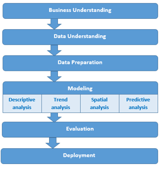
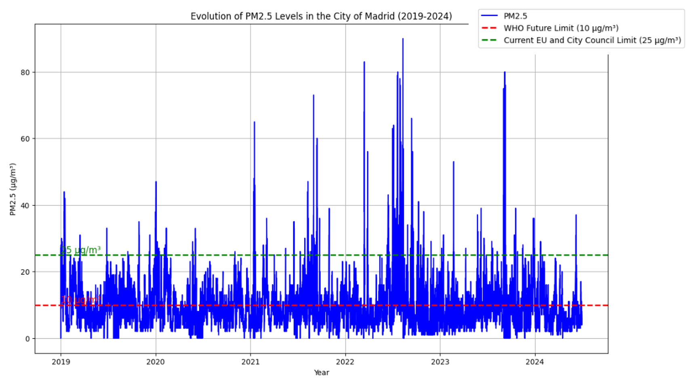
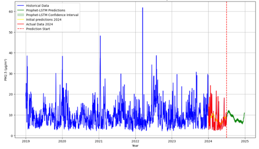

Analysis and Prediction of PM2.5 Pollution in Madrid
CRISP-DM and hybrid Prophet-LSTM models for urban air-quality forecasting


🔗 Direct access
- 📄 Published article
- 💻 Analytical notebook
- 🧪 Scripts and workflow
- 💾 GitHub repository
- 📚 Bibliographic reference set
🧠 Overview
This repository contains the reproducible materials associated with the article “Analysis and Prediction of PM2.5 Pollution in Madrid: The Use of Prophet–Long Short-Term Memory Hybrid Models.”
The study analyses urban PM2.5 pollution in Madrid using:
- official open data from the Madrid City Council;
- a structured CRISP-DM analytical workflow;
- descriptive, temporal and spatial analysis;
- and a hybrid Prophet-LSTM forecasting strategy.
The study covers observations from 2019 to mid-2024 and combines citywide analysis with district-level interpretation.
🧩 Methodological framework
The project adapts CRISP-DM to an urban environmental-data workflow integrating data preparation, exploratory analysis, spatial interpretation and forecasting.

Fig. 1. Adapted CRISP-DM workflow used in the study.
📈 Main empirical result
The historical analysis shows an overall reduction in PM2.5 concentrations over the study period, although relevant interannual variability and episodic peaks remain.

Fig. 2. Citywide evolution of PM2.5 concentrations in Madrid from 2019 to 2024.
District-level behaviour, spatial differences and detailed descriptive results are documented in the analytical notebook.
🤖 Forecasting framework
The predictive stage combines Prophet, which models trend and seasonal structure, with LSTM, which captures nonlinear temporal dependencies.

Fig. 3. Citywide PM2.5 forecast using the hybrid Prophet-LSTM approach.
District-level forecasts are available in the analytical notebook.
📌 Main findings
- PM2.5 concentrations show a general downward trend from 2019 to mid-2024.
- Important year-to-year variability and pollution peaks remain.
- PM2.5 patterns differ across monitored districts.
- The hybrid forecasting framework combines explicit temporal structure with nonlinear sequence modelling.
- The resulting analysis can support environmental planning and urban decision-making.
🔬 Reproducibility
The repository preserves:
- the original Python analytical scripts;
- the associated data folder;
- selected figures from the study;
- Quarto documentation;
- and a machine-readable bibliographic reference set.
See Scripts and workflow for the computational structure.
📚 References and citation
Article DOI: 10.3390/appliedmath4040076
Zenodo bibliographic reference set: 10.5281/zenodo.23880803
Cáceres-Tello, J., & Galán-Hernández, J. J. (2024).
Analysis and Prediction of PM2.5 Pollution in Madrid: The Use of Prophet–Long Short-Term Memory Hybrid Models.
AppliedMath, 4(4), 1428–1452.
https://doi.org/10.3390/appliedmath4040076
📬 Contact
Jesús Cáceres Tello
Complutense University of Madrid